Radial-polar sample layout
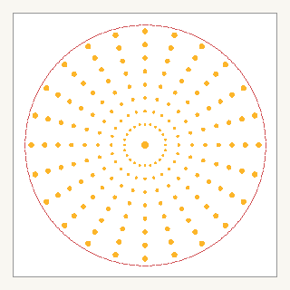
Matches the ring-sector seeding used by `sampling.type radialPolar`.
This gallery mirrors the beam profile machinery implemented in src/laserHeatSource/HeatSourceProfiles.C. It covers profile-local sampling, the base profile families, modifier stacking, additive weighted combinations, and both bare and applied noise fields. Imported csv and beamShape examples are loaded from the tutorial assets already in this repository.
The seeding logic is now profile-local. Each profile carries its own `sampling` block.

Matches the ring-sector seeding used by `sampling.type radialPolar`.
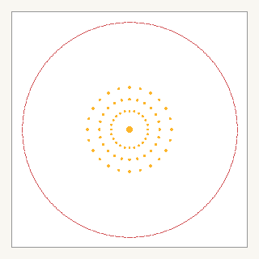
Power-based gating removes the dim outer sectors while keeping the on-axis sample.
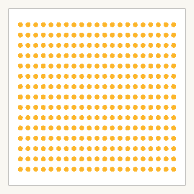
The sampling block supplies `halfWidth{X,Z}` and `nCartesian{X,Z}` directly.
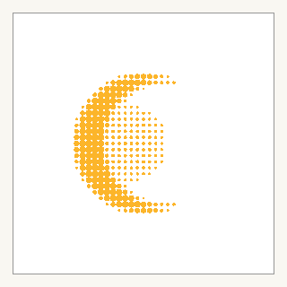
Cartesian sampling is the practical fit for imported spatial maps such as CSV intensity fields.
These panels map directly to the base profile types and multiplicative modifier stack in `HeatSourceProfiles.C`.
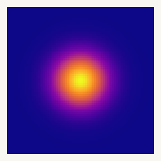
The `gaussian` alias is the super-Gaussian implementation with order = 2.
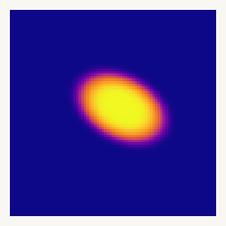
Elliptic support with rotation and center shift.
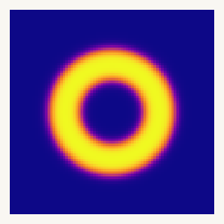
Soft inner and outer transitions from the annular profile.
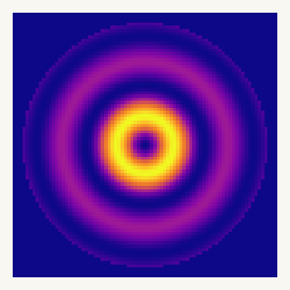
Ring structure from `bessel` with explicit first-zero radius.
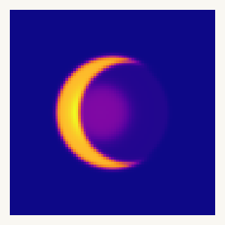
Imported intensity map from `csv_example/intensity_moon.csv`.
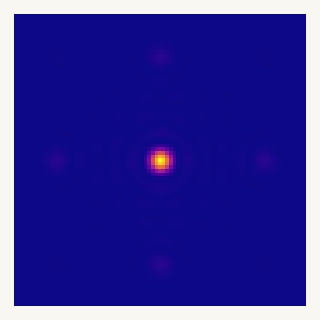
Imported primitive beam-shape data from `opa_cbc_example/beamShape.inp`.
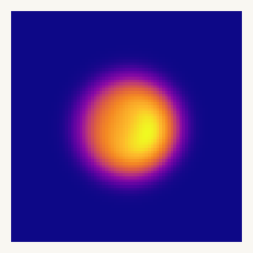
Modifiers multiply the base profile. Plane bias applies a directed linear tilt.
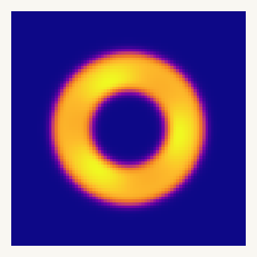
Drum noise redistributes ring intensity in radial and azimuthal modes.
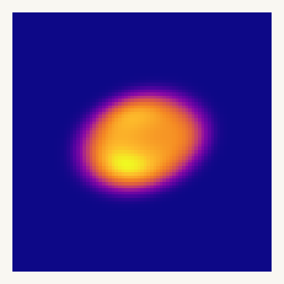
Cartesian modal noise is useful when the support is naturally rectangular.
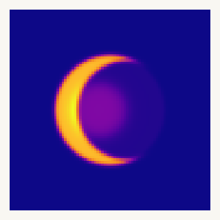
Grid noise applies a smoothly correlated random mask on top of an imported map.
Combinations are additive. The physically relevant part is that the weights distribute power between individually normalized components.
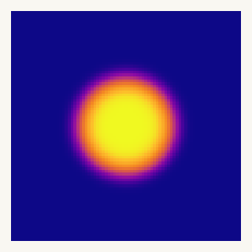
Weights act on per-profile power allocation after each component is normalized.
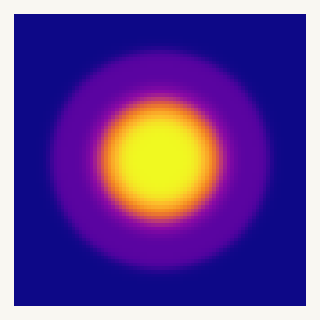
Weights act on per-profile power allocation after each component is normalized.
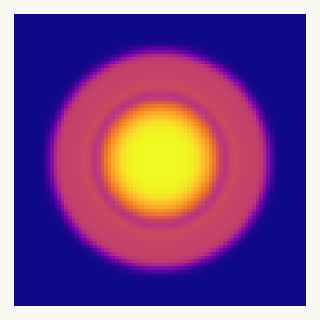
Weights act on per-profile power allocation after each component is normalized.
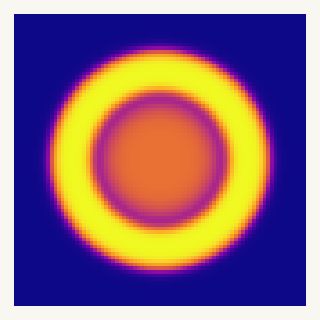
Weights act on per-profile power allocation after each component is normalized.
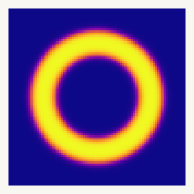
Weights act on per-profile power allocation after each component is normalized.
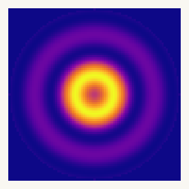
A mixed beam using the same additive weighting mechanics as the multi-profile path.
The bare fields are shown as signed modulation. The applied fields show the same modulation after multiplication with a base profile. Time-sequence panels read left to right.
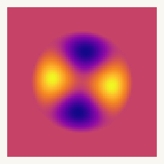
Signed modulation field: `drumNoise.evaluate(...) - 1`.
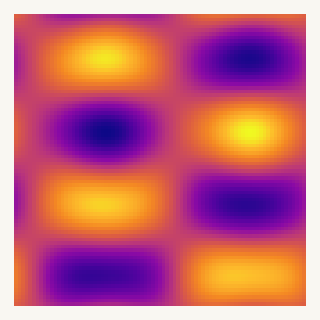
Signed modulation field from orthogonal cosine modes.
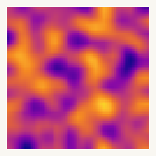
Signed correlated random mask sampled bilinearly from a smoothed grid.
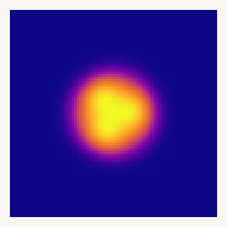
Same modifier field as above, now multiplied by a base profile.
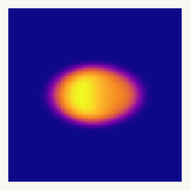
Same modifier field as above, now multiplied by a base profile.
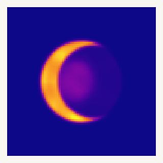
Same modifier field as above, now multiplied by a base profile.
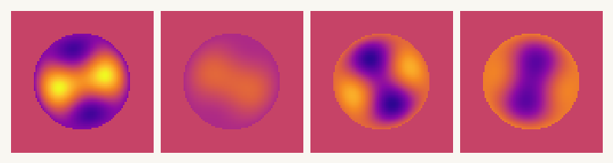
Left to right: t = 0.00, 0.20, 0.40, 0.60. Same plasma scale across all frames.
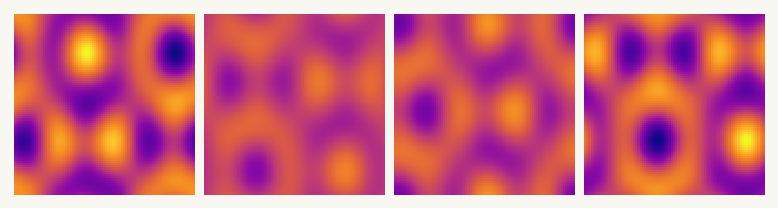
Left to right: t = 0.00, 0.25, 0.50, 0.75. The phase motion comes from the modal frequencies.
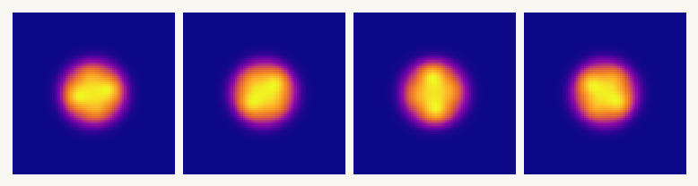
Left to right: four discrete updates representing successive stepwise random refreshes.